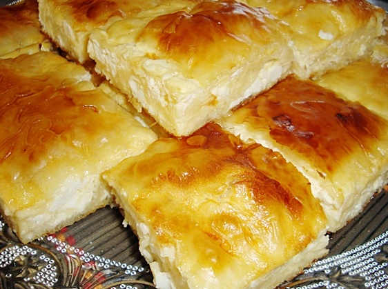

Gibanica

Description
Gibanica is a delicious pie-like food originating from Serbia. It's a wonderful mixture of egg, various cheeses, and filo dough to create a savory meal that everyone in the family can enjoy.
So here is my recipe for Gibanica!
Ingredients
- 8 ounce package of Cream Cheese
- 9 large eggs
- 2 1/2 pounds large-curd Cottage Cheese
- 1/2 pound Feta Cheese (optional)
- 1 pound Filo Dough
- 8 ounces (1 cup) melted unsalted butter
Instructions
- In a large bowl, mix cream cheese. Add three eggs at a time, then beat until even. Repeat until all eggs are in bowl
- Mix cottage and feta cheese into mixture, set aside.
- Preheat oven to 350 degrees F. Fold two sheets of dough in half, then place in pan
- Lightly brush filo dough with melted butter, then spread around 1/2 cup of the cheese mixture evenly around the pan.
- Place three sheets of dough on top of the dough just spread
- Repeat Steps 4 and 5 a few more times until almost out of dough. Place the last three filo dough layers on top, and spread the butter.
- Cook in over for 1 hour or until golden brown.
- Let sit for 20 minutes, then serve.
Return to Recipe List